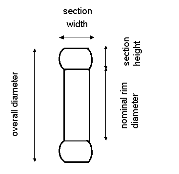

Input: tire.in
Output: tire.out
Given the tire descriptor typically found on the sidewall of a passenger or light truck tire, you will calculate the tire's overall circumference. Each line of the sample input contains an example of a tire descriptor. The following diagram illustrates some of the terminology:

The tire descriptor contains the following items of information:
The overall circumference (the goal of your calculations) is based on the overall diameter, which is the diameter of an inflated tire at the outermost surface of the tread.
The input will consist of one or more lines, terminated by end-of-file. Each line of the input will contain one tire descriptor, as discussed in the preceding paragraphs. All numerical quantities will be positive integers. Exactly one blank space will separate consecutive items (including the slash) on the input line.
For each line of input, the program will produce exactly one line of output, consisting of: the input line, followed by a colon, one blank space, and the overall circumference, expressed in centimeters, rounded to the nearest integer. Note that 1 centimeter equals 10 millimeters, and 1 inch equals 2.54 centimeters.
P 195 / 75 R 14 P 205 / 60 H R 15 T 115 / 70 D 15 LT 245 / 75 R 16
P 195 / 75 R 14: 204 P 205 / 60 H R 15: 197 T 115 / 70 D 15: 170 LT 245 / 75 R 16: 243